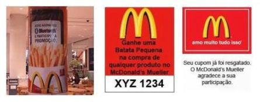

Seu navegador não suporta os efeitos da apresentação by Sotero Junior
Utilize os seguintes Navegadores: Chrome, Safari or Firefox browser.
Uniblue: Uma ferramenta mobile de Software livre para
disseminação de conteúdos publicitários em instituições de ensino
RODRIGO AUGUSTO HONORIO DA CUNHA
RODRIGO DOS SANTOS LIMA
SOTERO ROCHA DE SOUSA JUNIOR
L2CAP: Camada Responsável pelo transporte de dados.
RFCOMM: Camada de comunicação porta serial sem fio.
OBEX: Camada de manipulação de troca de objetos.
SDP: Camada para descoberta de dispositivo.
Na eleição a presidencia dos E.U.A em 2008, John McCain
levantou 11 milhões de dólares para sua campanha.
No mesmo mês, Barak Obama não participou de nenhuma campanha para arrecadação de fundos, e levantou 55 milhões de dólares em 29 dias utilizando as mídias
socias
A publicidade tradicional está em declinio nos últimos anos...
Enquanto a publicidade digital está crescendo rapidamente!
De acordo com o relatório Global AdView Pulse, da consultoria Nielsen, os investimentos em publicidade somaram US$ 498 bilhões em todo o mundo.
Gastos com impressos chegaram a 2% na América Latina.
Nova forma de marketing de Proximidade
totalmente "opt-in", conteúdo dinâmico ,flexibilidade ,interatividade e gerenciável.
EXEMPLOS - BLUETOOTH MARKETING

Crescimento dos Smartphone 2014
Protótipo Personalizado pela própria Instituição de Ensino
O Objetivo é proporcionar a disseminação de informações em uma Intituição de Ensino, com baixo custo, simples e filtrada.
Abordarmos os diversos tipos de estratégia de marketing que podem ser
aplicados atráves desse protótipo;
Apresentamos essa tecnologia a uma instituição de Ensino Superior de Maceió;
Validamos o protótipo quanto à verificação de falhas e melhorias;
Estudamos o nível de aceitação dos universitários com a nova forma
de marketing através do Bluetooth;
Módulo Cliente
Referências
ALECRIM, Emerson. Tecnologia Bluetooth. Disponível em: http://www.infowester.com/bluetooth.php. Acesso em: 14 mar. 2012.
BARBOSA, Mariana. América Latina lidera alta em gastos com publicidade. Disponível em: http://www1.folha.uol.com.br/mercado/1076005-america-latina-lidera-alta-em-gastos-com-publicidade.shtml. Acesso em: 01 jul. 2012.
MIWA, Renata. Em Curitiba, McDonald's utiliza Bluetooth Marketing. Disponível em: http://www.mobilepedia.com.br/cases/em-curitiba-restaurante-do-mcdonald%E2%80%99s-utiliza-bluetooth-marketing. Acesso em: 22 maio 2012.
MOBILEPEDIA. Mobile coupons via bluetooth na C&A (mobile marketing). Disponível em: http://www.mobilepedia.com.br/cases/mobile-coupons-via-bluetooth-na-ca-mobile-marketing. Acesso em: 16 maio 2012.
MORAIN, Dan. Obama sets fundraising record with $55 million. Disponível em: articles.latimes.com/2008/mar/07/nation/na-money7. Acesso em: 01 jul. 2012.
PEREGRINO, Fernanda. Bluetooth Marketing: Novo meio de divulgar o negócio. Disponível em: http://www.facadiferente.sebrae.com.br/2010/05/17/bluetooth-marketing-novo-meio-de-divulgar-o-negocio. Acesso em: 20 mar. 2012.
TORRES, Cláudio. A Bíblia do Marketing Digital:Tudo o que você queria saber sobre marketing e publicidade na internet e não tinha a quem perguntar. São Paulo: Novatec, 2009. 399 p.
WASHINGTON, Sen. McCain raises $11 million in February. Disponível em: blog.mlive.com/elections_source/2008/03/mccain_raises_11_million_in_fe.html. Acesso em: 01 jul. 2012.